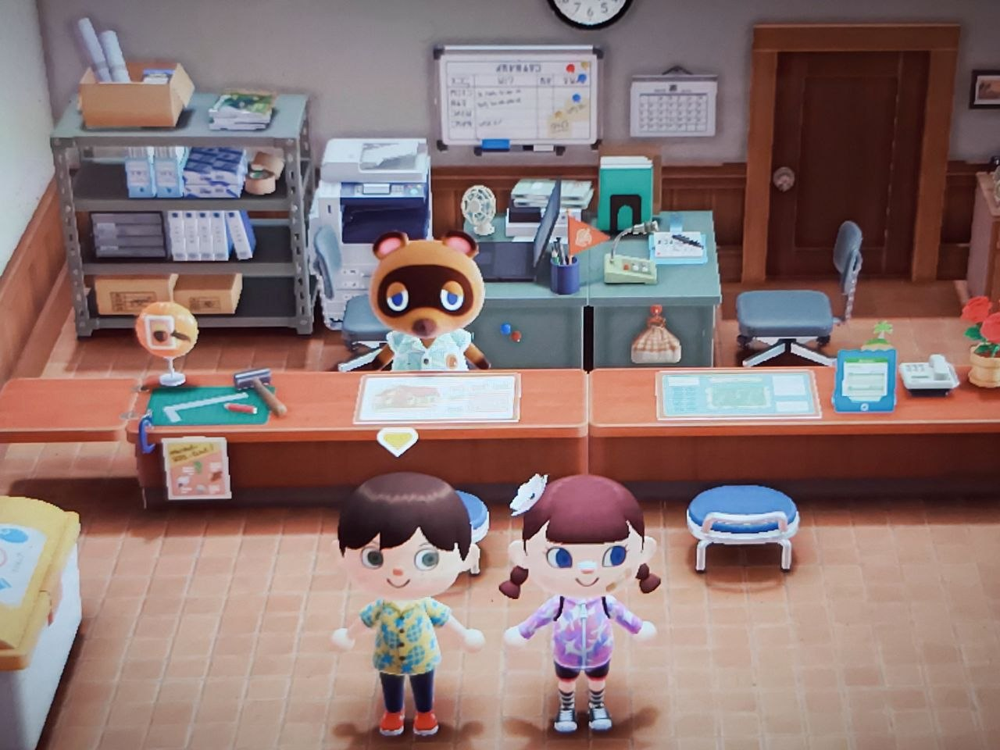
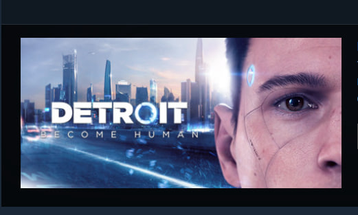
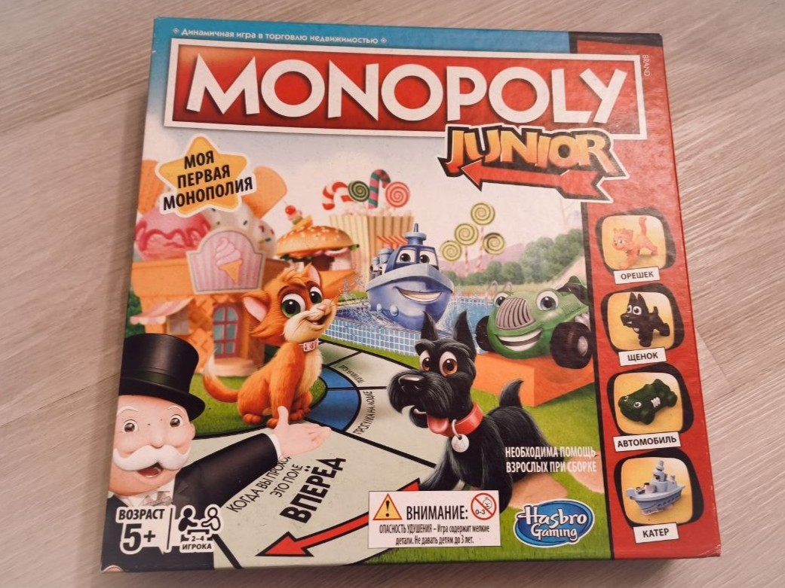
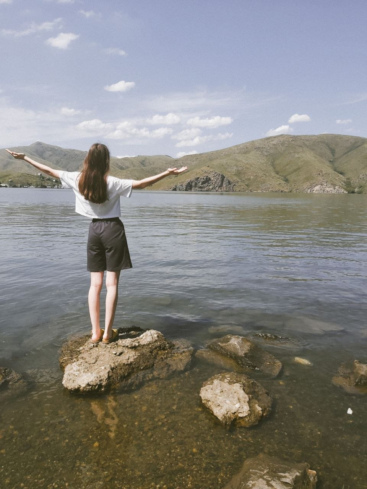
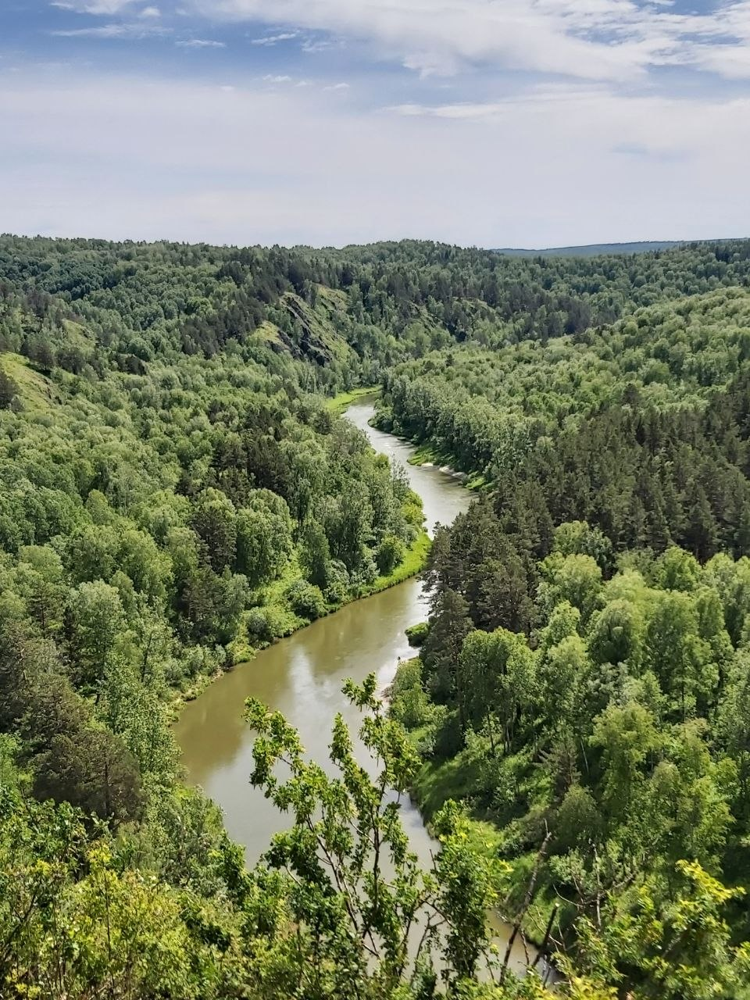
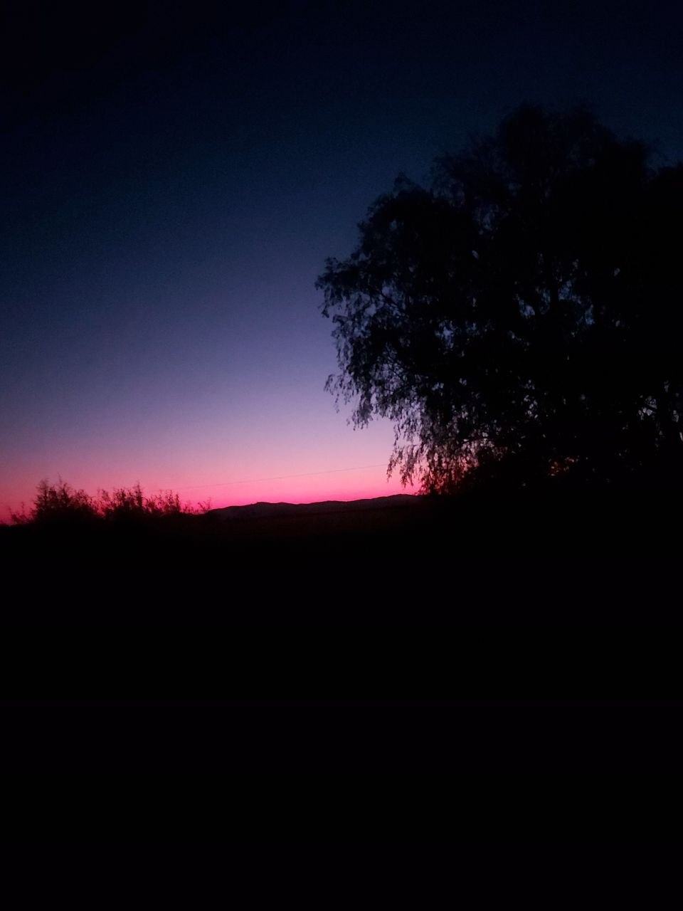
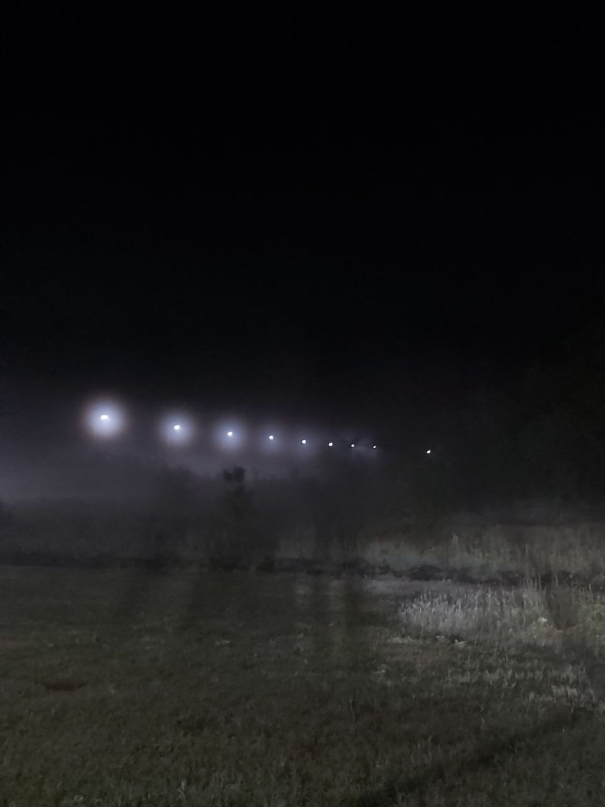
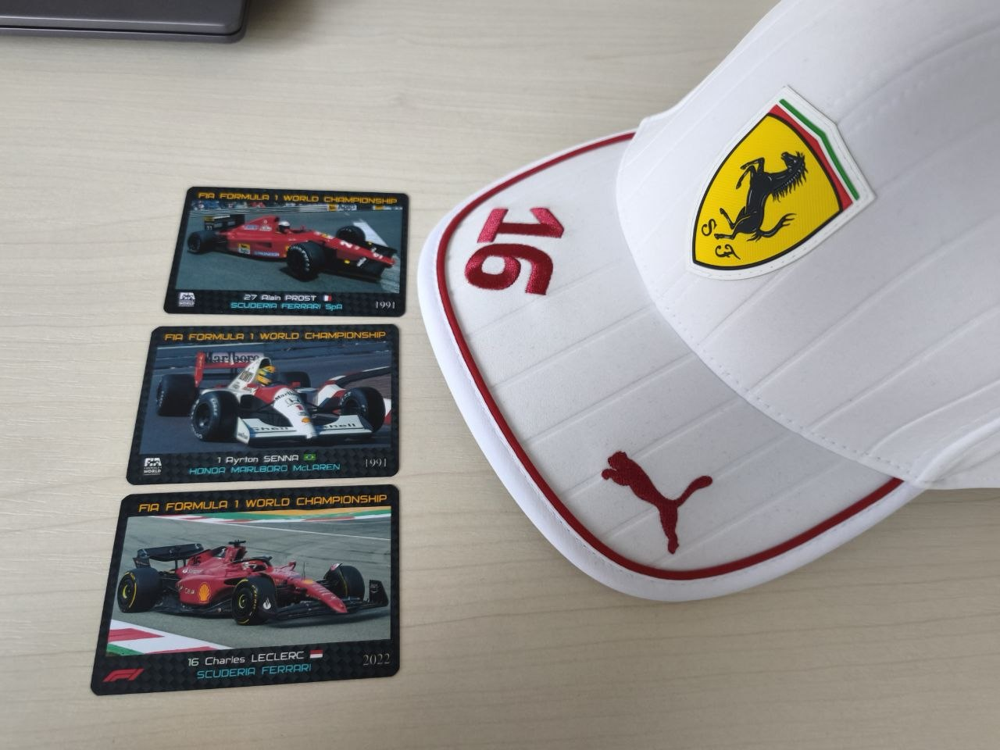
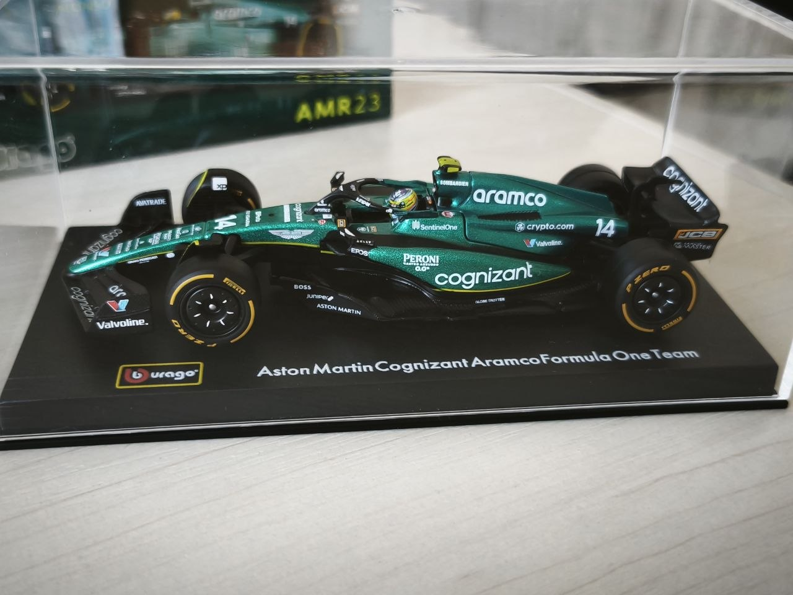
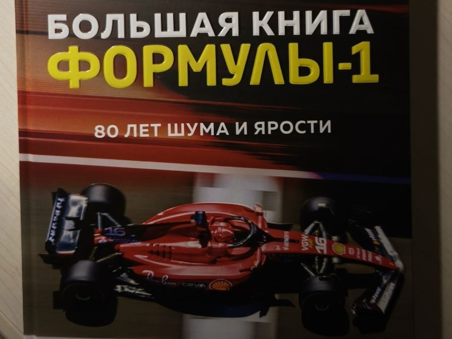

🎮 Игры — это целый мир! Вечера настолок с друзьями, когда вы смеётесь, соревнуетесь и просто классно проводите время вместе. Или компьютерные игры, где можно погрузиться в увлекательный сюжет в красивом мире, пройти сложный уровень или просто отдохнуть после учёбы в обычной игре-песочнице.
🎲 Настольные игры - это живое общение и куча воспоминаний, над которыми можно будет долго смеяться. Зато компьютерные — развивают реакцию, логику и дают возможность оказаться в любой вселенной. И да, иногда бывает досадно проиграть или застрять на сложном моменте... Но победа после этого становится ещё слаще! Главное — играть в удовольствие и не забывать делать паузы 😊



🌅 Путешествия для меня — это не просто смена мест, а способ увидеть мир во всей его красоте. Я бесконечно люблю природу: рассветы, закаты, реки и моря, бескрайние леса и поля, каждое растение, каждый камень — всё это безумно красиво и дает огромное количество положительных эмоций и энерги! Иногда путь до определенного места может оказаться очень тяжелым, но награда - возможность полюбоваться местной природой и увидеть что-то действительно потрясающие, всегда побеждает страх и усталость
🏛️ Но и города тоже вдохновляют! Архитектура, музеи, старые улочки, местные кафе — в каждой поездке открываешь что-то новое. Да, бывает суматоха со сборами, долгая дорога или неожиданные ситуации... Но именно эти моменты делают каждое путешествие уникальным. А воспоминания остаются на всю жизнь!




🏎️ Адреналин, скорость, борьба до последнего круга — это то, за что я люблю Формулу-1. Но вообще, к этому пункту можно отнести любой спорт, который заставляет сердце биться чаще. Болельщики поймут: это и радость от побед, и горечь поражений, и бесконечная вера в любимую команду или спортсмена (Forza Ferrari)!
🔥 Спорт дарит эмоции, которые сложно с чем-то сравнить. Когда твой любимый гонщик вырывается вперёд на последнем круге — дух захватывает! А если проигрывает... ну что ж, значит, будем болеть ещё сильнее в следующей гонке. Это эмоциональные американские горки, но именно они делают жизнь ярче и насыщеннее. Поэтому самое главное смотреть то, что тебе нравится и интересно! А может даже самому попробовать заниматься тем или иным видном спорта!(желаю удачи)



🌸 Почему именно 14 хобби?
14 — моё любимое число (и день рождения!)
📝 Теперь можете перейти на главную страницу и оставить свой отзыв!